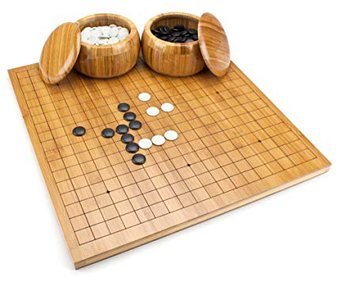

Go is a fascinating board game that originated in China more than 4,000 years ago. Also known as baduk, wei ch’i, weiqi, and igo, it is played today by millions of people, including thousands in the United States.
The basic objective of Go is to surround as many intersections on the board with your stones as possible. While this sounds simple, there are several additional rules that add great depth to the game. Indeed, due to the complexity of Go, it took nearly 20 years longer for scientists to code a program that could beat a Go a champion than for scientists to code programs that could beat a chess champion!
The Stone Cutters Go Club is always willing to teach beginners the rules of the game. Reading Go material is very helpful, but the best way to improve at Go is simply to come play with other Go players. However, players who want to get a head start might want to read Karl Baker’s free online guide to playing Go: The Way to Go, buy the first two volumes of Janice Kim’s Learn to Play Go series, or try out some free Go problems on the Tsumego Pro android app.